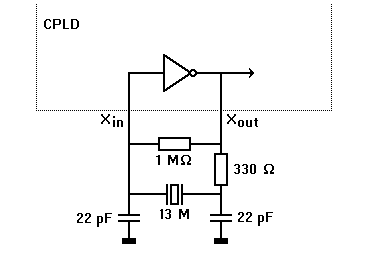
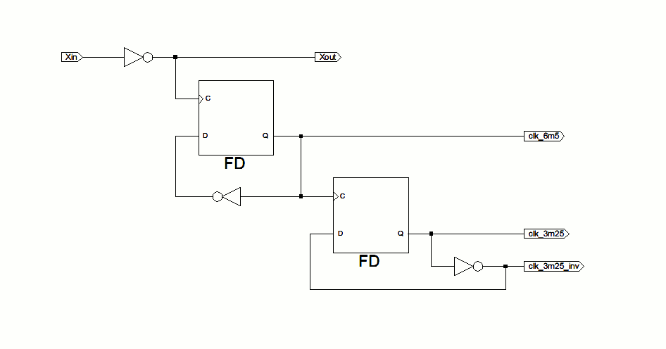
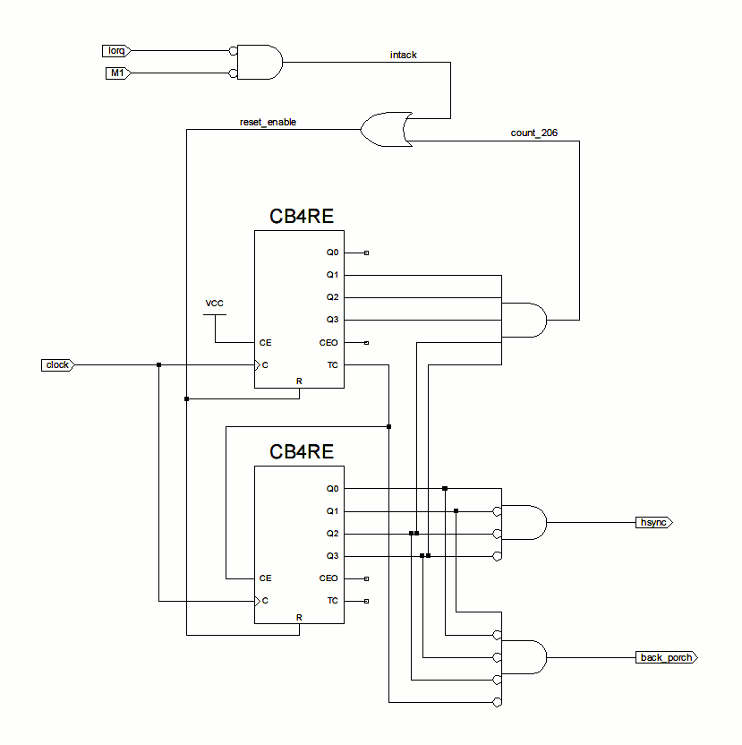
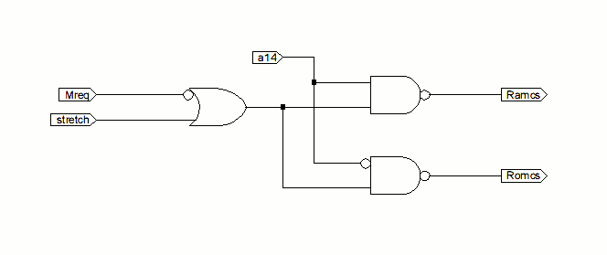
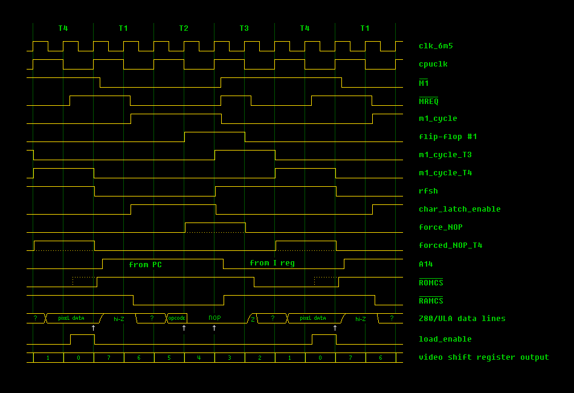

.png){kind=link}
.png){kind=link}
.png){kind=link}
.png){kind=link}
.png){kind=link}
{kind=link}
{kind=link}


.jpg)


.jpg)
.jpg)
.jpg)


.jpg)
Introduction
Archive contents
ZX81 video generation
Building blocks
• Clock generator
• Horizontal sync generator
• /ROMCS and /RAMCS
• Video shift register
The big picture
• Video output
• Keyboard input
Signal timing
Implementation details
• Composite video output
• Tape input
• CPLD optimization settings
• Power supply decoupling
Build history
Software tests
Acknowledgments
Feedback
Copyrights
13 July 2012 - resistor values in composite video output adjusted to produce more standard voltage levels
11 July 2012 - updated location of Grant Searle's build-your-own ZX80/ZX81 pages
4th June 2012 - a minor addition to the "composite video output" section (no logic changes)
2nd June 2012, v1.10 - first public release
This is a CPLD re-implementation of the ULA in a Sinclair ZX81.
The ZX81 was a very simple 8-bit home computer, with just a few chips inside: a Z80 CPU, a ROM, 1 or 2 RAM chips, and the ULA. Its predecessor, the ZX80, was built using some 20 chips, most of which contain simple logic functions. The ZX81 had a lot in common with the ZX80 (with some improvements), and the Sinclair-designed ULA chip integrated all the simple logic IC's into a single chip. This to make for easier assembly, reduced production cost & better reliability. Together with the software in ROM, the ULA is what gives a ZX81 its 'personality'. It also generates the TV image.
ZX81's that survived are ~30 years old by now, and failing. But for some, love for this old equipment never dies. Emulators are good & easy to use, but there's no substitute for the real thing. Fortunately ZX81's are not particularly difficult to repair, and almost all parts can be replaced by new ones. Except one: the ULA. The only source for a ZX81 ULA is another ZX81, and it is (or rather: was) basically a black box with unknown internals.
That was my main motivation for this project: to find out how a ZX81 ULA works, develop something to take its place, and enable re-implementation in modern hardware. To propel the ZX81 forward in the 21st century, and make sure that it's possible to build one without needing original, 30+ year old parts. To enjoy using a ZX81 whenever the urge comes up, regardless of whether original machines are still around, and not worry about breaking 'precious', antique computing hardware.
This is nothing new: others have built ZX81 clones using discrete logic, and it is pretty much known what the ULA does. However I wanted something more compact, more flexible, easier to move to newer hardware, and perhaps produce a small series of it. Therefore I used a modern programmable logic component -a CPLD- for the job. With the goal of figuring out what exactly the logic inside the ULA does. I succeeded in this task, and present the results to help others produce their own ULA or ZX81 re-implementations. I do not recommend using the exact same parts & circuitry that I used, to replace a ZX81 ULA! Rather consider it a reference implementation of sorts, that shows internal ULA logic and enables you to implement that logic in hardware (or emulator!) of your own choice. For the record: CPLD implementations have been done before, so this is not a first.
The CPLD used is a Xilinx XC9572 in 84-pin PLCC package (-15 speed grade). This is a 5V part, that has the option (not used here) to output 3.3V level signals. This big chip & wealth of I/O pins is very useful for development, but for producing small series there exist smaller & cheaper parts with a more appropriate number of I/O pins.
Implementation was done using schematic entry in Xilinx ISE 13.4 on a Debian Linux system. For a project like this, use of a HDL like Verilog or VHDL is probably easier & more flexible; chances are I'll go that route on future projects. The upside is that for many people, schematics are easier to read. :-)
This design is mostly synchronous clocked, and has proven to work very reliable (timing- and otherwise). It should be well suited for use in other device families / speeds, or FPGA implementations (for example combined with a T80 or TV80 soft core). Hardware-wise it's a direct 1:1 ULA replacement, with external pins allowing selection of border color (that is: white or black ;-) and inverted screen. Analog I/O (composite video out, tape loading, SAVEing to tape, sync-based sound generation) works as expected. Software-wise it has been extensively tested, showing 100% compatible ZX81 ULA behavior.
Project consists of a top-level schematic, plus schematics for 4 sub-components in it. Sources can be found in directory "Source". It is possible to re-build the project using just these 5 files:
Desired pinout is set using the file "device_settings.ucf".
You can start a new project in ISE Project Navigator, add above files as sources, make some edits, go through synthesize, translate, fit process & re-create a CPLD configuration file that way. For your convenience I have included the project file "ZX81_ula.xise" that can be opened directly, this lets ISE know what files are used, how they relate to each other & various other settings. If you open the top-level schematic, ISE will be missing the contents of the 4 sub-components, because the schematic refers to symbol files that were generated from the other schematics (for use as building blocks). To avoid this problem, these "*.sym" files are also included.
During implementation, a variety of files are generated. The most important ones can be found in directory "Generated".
First the all-important CPLD configuration file "zx81_ula.jed", which is used to configure (program) a blank XC9572 part. Note: there exists hardware + software to do this job without the Xilinx tools. From what I understand, such software would use a .svf or .xsvf file to tell it how to bit-bang JTAG signals to erase / program / verify the CPLD. For this reason I've generated & included these files too.
The various report files can be important to find out if results are meeting requirements. For example: pin use as it is finally decided, is found in "Fitter report.txt" (near the bottom). When changes are made, you may find that pin use is not the same as what you wanted it to be... Also the many different settings used by the ISE tools, are logged in these reports - useful for reference and to reproduce builds. For convenience, I've included screenshots of various option dialogs: 1 2 3 4 5.
Image generation in the ZX81 is a very intricate co-operation between Z80, ULA, ROM and (to a lesser degree) RAM. In terms of technical complexity (# of logic gates etc), simple. Conceptually, not so much - it's difficult to grasp how it all works. Regular ZX81 display, in a nutshell:
Some of this process is fixed in hardware (the ULA, resistors separating ROM/RAM from ULA/Z80 data lines), some of it is ROM code. In practice, ZX81 display generation turned out to be remarkably flexible, and various high-resolution schemes were produced. Some using ROM data (= pseudo Hi-Res), some using pixel data stored in RAM (= true Hi-Res, this works with internal RAM, or 16K RAM pack with a small hardware mod). Sir Clive missed this Hi-Res capability by just a few logic gates... :-(
In general, CPLD pin and internal signal names starting with lowercase (a-z) indicate active-high signals. Signal names starting with "/" or uppercase (A-Z) indicate active-low signals.
The ZX81 uses a 6.5 MHz ceramic resonator as timing reference, and the surrounding circuit is connected using a single ULA pin (35). This CPLD design brings its own clock oscillator & as a result, this is the only signal on the ULA socket that is not used/connected. The ceramic resonator on the ZX81 board is not used anymore.
The crystal oscillator uses a 13 MHz crystal, with circuit below:

The inverter is part of the CPLD design, the other parts are external. This oscillator circuit might not work well with a FPGA, with a CPLD it might not be recommended but it does work. Better would be to use a ready-built crystal oscillator and feed its output to a single CPLD pin.
The 13 MHz is not used directly, but divided by flip-flops into nice 50/50 duty cycle, synchronized clocks of 6.5 (= pixel clock) and 3.25 MHz (= Z80 CPU clock). The inverted CPU clock is output to the ULA socket pin (14), on the ZX81 board this goes through a transistor buffer that inverts the signal again. Therefore internal CPLD signal "cpuclk" is -roughly- the same as the clock signal that the Z80 sees.
Both 3.25 MHz signals are mapped onto global clock pins to promote robust, problem-free clocking of CPLD internal circuitry. This is not done for the 6.5 MHz signal: use as a global clock signal implies routing it to a dedicated CPLD pin, but in general it's better not to route signals to I/O pins if it can be avoided. This signal is less critical since it isn't used anywhere that affects CPU operation, therefore I kept it internal-only.

The FD design elements are D-type flip-flops that are clocked on the rising edge of their Clock input (1/6th 74174 equivalent, without /CLEAR input).
Horizontal sync pulses are generated using an 8-bit synchronous counter. That is: a counter that only changes state on the rising edge of its clock input, with all Q outputs updating simultaneous. Other control inputs don't have immediate effect, only determine what happens during clock transitions.
The counter is clocked with the 3.25 MHz CPU clock signal. It is reset on the next clock tick when the Z80 indicates an interrupt acknowledge, or the maximum count (206) was reached. This results in a 207-cycle period, the exact duration of a single screen line (63.7 µsec = 15.7 kHz line frequency).
The top AND gate decodes count 11001110 (206).
The middle AND gate decodes counts 0001xxxx (16-31), this creates a 16-cycle (4.92 µsec) hsync pulse.
The bottom AND gate decodes counts 00100000-00101110 (32-46), this creates a 15-cycle (4.62 µsec) "back porch" pulse that always follows a hsync pulse.
The 16-cycle delay from interrupt acknowledge to hsync (counts 0-15) isn't very critical, but an expert in the matter determined that this is how it works on a real ZX81. Read: maximum timing compatibility.
The synchronous nature of this counter ensures there are no ripple effects when the count is incremented, this should make the hsync and back porch pulses glitch-free.

The CB4RE design elements are 4-bit synchronous counters, with (also) synchronous Reset and Clock Enable input, and Terminal Count output (= all Q outputs 1). The TC output is used to cascade two 4-bit counters into an 8-bit one. Clock Enable Out isn't used.
This is the simplest part of the design. It could easily be incorporated in the top-level schematic, but modularity is a good thing. :-)
Most ZX81 clones use only /MREQ and A14 signals to produce /ROMCS and /RAMCS. During development, the CPLD was run side-by-side with the ULA, and using only /MREQ and A14 did not work. It was later found that in a forced NOP cycle, /ROMCS signal extends beyond /MREQ active period. For this reason a "stretch" input was added, to extend /ROMCS or /RAMCS active period in a forced NOP cycle. This complicates the circuit slightly, but has several advantages:
By applying this stretch signal to /MREQ before combining with A14, the improved signal timing applies to both /ROMCS (regular ZX81 display / pseudo Hi-Res) and /RAMCS (true Hi-Res). For regular memory access, /ROMCS and /RAMCS timing is the same as when only /MREQ and A14 is used.

Note: It should be easy to modify /ROMCS or /RAMCS logic while leaving this signal timing intact. If you do, make sure that for any combination of /MREQ and A14 (and perhaps other address lines) /ROMCS and /RAMCS are never active at the same time!
Pixels are streamed to the screen at a rate of 6.5 MHz, continuous & regardless of where pixel data comes from. This enables a crisp image with constant width pixels on every screen line. Pixel data is loaded 8 bits at a time through the A-H inputs, whenever "load_enable" is active at the rising edge of the clock input. This data is then shifted through the flip-flops in A -> H direction towards the "serial_out" output, so data loaded through H (data bit 7) is the first to hit the screen. When "load_enable" is inactive (read: when no DFILE execution takes place), pixel data is clocked in through the "serial_in" input. For regular ZX81 display this input sets the border 'color'. For software that uses modified display routines, this color may show up elsewhere on the screen.
XOR gates provide the necessary "inverted character" function (controlled by bit 7 of the character code). In principle a single XOR gate could be used, but that requires control of when to start & when to stop inverting the pixel stream. The shown configuration is easier to understand, robust, and turned out to consume few CPLD resources. Therefore I preferred this solution.
The FDSR design elements are D-type flip-flops triggered on the rising edge of their Clock input, with synchronous Set and Reset input. Set takes precedence over reset, but in the configuration shown, at most 1 of these will be active at any time.
Okay... so far for the building blocks. Let's move on to:
Main schematic follows the ZX80 circuit in some ways; both for practical & compatibility reasons. Parts that control timing are designed to mimic ZX81 behavior, with reliable operation (non-critical timing) being an important consideration.
Clock generator use is straightforward: 6.5 MHz clock going to the video shift register, 3.25 MHz CPU clock going to hsync generator & some flip-flops that time events (lower right corner), inverted CPU clock also going to one of these flip-flops, the character latch, and ULA socket pin. Note that non-inverted CPU clock is also available on a CPLD pin due to its use as global clock signal. But it is not used externally!
Horizontal sync generator uses 3.25 MHz CPU clock, /IORQ and /M1 to produce hsync and back_porch signals used in the video circuitry.
I/O port decoding (including a keyboard read signal) is done by the AND gates shown in the upper middle. Next to it 2 flip-flops that control the software-generated vertical sync, and whether the Z80 receives NMI's. A high input on "zx80_zx81" lets NMI's pass through as in a ZX81, a low input disables NMI's as in a ZX80. I have a pull-up + jumper to ground on this pin, with the ZX81 ROM it causes an annoying flicker upon each key press (= loss of screen synchronization, as expected). I didn't test this CPLD design with a ZX80 ROM, so this 'feature' might be incomplete (hsync generator?).
Next to the clock generator is another counter (upper left), reset by a vertical sync and incremented by horizontal sync pulses. The 3 counter bits track the screen line within characters (0-7), and are gated onto A0-A2 during a Z80 refresh cycle. Note that A0/A1 are also used as inputs (bi-directional), A2 is output only.
I read somewhere that hsync pulses are supposed to continue during a vsync (hsync pulses in which voltage rises from sync level to black level). This did not work correctly, so I simply NORed these signals as is often done. Which causes a vsync to mask any hsync pulses, read: output is at sync level for the entire duration of vsync, regardless of hsync pulses. This seems to be expected behavior.
Signal "border" selects the fill color when the video shift register runs 'empty'. When 0, black pixels are produced. When 1, white pixels are produced as on a real ZX81.
Signal "Invert_screen" does what its name suggests. When 0, the entire screen (including border) is inverted. When 1, the screen is not inverted.
Together these inputs allow selection of any color combination for active display area and border. Both inputs are safe to change during operation. On my development ZX81, I have pull-ups on these signals, with a jumper to ground. Other options would be DIP switches or even software control.
The resulting pixel stream (video) is put through an AND gate that masks the output (luminance) to 0 whenever any of vsync, hsync or back_porch is active. 1st: in combination with Csync, voltages on the composite video signal are reduced to 3 levels: sync level, black level, and white level. Following a horizontal sync, the output is kept at black level for the duration of back_porch signal, this should make sure TV's produce bright white & deep black. For how to combine Csync & luminance into a composite video signal, see below.
2nd, this makes it easy to use any signal as video stream. For example if a random number generator where connected to "video", one would expect to get snow on the screen but still with stable image synchronization and proper black & white levels. Same with almost white, almost black, screens with big horizontal / vertical bars etc.
It's easy to modify the design to output separate sync signals. Together with the pixel stream in digital form, this makes it possible to use any display equipment that supports the same horizontal & vertical frequencies. For example CGA or EGA monitors, or output blue-on-black on a SCART equipped TV.
A read of I/O port FEh (any I/O port with A0 low) gates Kbd0-4 signals onto the data bus. Bit 5 isn't used. Bit 6 has the 50/60 Hz select signal (usa_uk). The ULA has an internal pull-up on this pin, for a CPLD where this can't be programmed, an external pull-up is needed. 0 selects 60 Hz (NTSC), 1 selects 50 Hz (PAL). Bit 7 is the tape input.
It has been said that ULA data lines are open collector outputs. I can't confirm this, but to be safe I've implemented things to behave that way. Originally I used 2 sets of tri-state buffers, one for keyboard signals and one for forcing NOPs. But ISE design software kept complaining about it, and CPLD resource use wasn't optimal. So I reduced this to 1 tri-state buffer per data line, and worked out the logic on when it should be pulled low. This worked out well, and CPLD resource use was down. So this part of the schematic is an optimization, rather than aiming for readability...
BUFE design element is a tri-state buffer with active-high Enable. When E is low, the output is in high impedance state. When E is high, whatever is on the input is passed onto the output.
FDC design element is a D-type flip-flop with asynchronous clear (CLR). When CLR is high, the flip-flop is reset to 0. When CLR is low, data is clocked in on the low-to-high transition of the Clock input (1/6th 74174 equivalent, but with active-high clear).
FD4CE design element is a 4-bit register with asynchronous clear (CLR) and Clock Enable input. When CLR is high, the register is reset to 0. When CE is low, clock transitions are ignored. When CLR is low and CE is high, data is clocked in on the low-to-high transition of the Clock input.
CB4CE design element is a 4-bit binary counter with asynchronous clear (CLR) and Clock Enable. When CLR is high, the counter is reset to 0. When CE is low, clock transitions are ignored. When CLR is low and CE is high, the counter is incremented on the low-to-high transition of the Clock input. Q3, Clock Enable Out, and Terminal Count outputs aren't used.
For more details on design elements: see Xilinx's CPLD Libraries Guide (UG606) and/or documentation that comes with your ISE install. Note that these design elements are only available for use in some CPLD families! So when targeting another CPLD family, it might be necessary to use other forms of design entry like Verilog or VHDL.
The picture below shows somewhat 'beautified' timing for clock, Z80 and internal CPLD signals, and what happens on Z80/ULA side of the data bus resistors. In active display area, using standard ROM display routines. Inside this area the ULA feeds NOP instructions to the Z80, while grabbing character codes & pixel data from the data bus.
Z80 clock cycles are numbered T1, T2, T3 etc, each starting with a rising edge, and ending with the rising edge of the next T state. One T state for previous/next NOP instruction is shown, to ease understanding of how signal timing flows from one instruction to the next. For more timing diagrams & related specifications, please refer to Z80 CPU datasheets. Also ZX80/ZX81 guru Grant Searle has some very helpful scope pix on his site.
Both signals /MREQ and /M1 active indicates an opcode fetch. This signal (m1_cycle) is clocked into a flip-flop at the falling edge of each Z80 clock cycle. Its output is active during opcode fetches, from falling edge T2 until falling edge T3. This signal is clocked into a 2nd flip-flop on the rising edge of each Z80 clock cycle (= exactly halfway the active period of 1st flip-flop's output). Its output (m1_cycle_T3) is active during the T3 cycle that follows. This is clocked into a 3rd flip-flop, also on the rising edge of each Z80 clock cycle. Its output (m1_cycle_T4) is active during the final T4 cycle.
Signals m1_cycle_T3 and m1_cycle_T4 are ORed into a substitute refresh signal (rfsh). Following an opcode fetch, it is active for the entire T3+T4 period, and therefore well suited to control address lines. Z80's /RFSH signal can be used instead (done during development!), but it is not available on any ULA socket pin.
Clocking the character latch occurs at the falling edge of each Z80 clock cycle, when /MREQ is active and rfsh not active. Read: on every memory access, at the falling edge of T2 (for regular read/writes, perhaps in T3 as well). In an opcode fetch cycle, RAM has had about 3/4 clock cycle (~230 ns) to come up with the data. In the refresh cycle that follows, "char_latch_enable" is inactive and the latched character code gated onto A3-A8 as partial ROM address (together with the line count to A0-A2). Note that this happens for every refresh cycle, even when no forced NOP execution takes place, using whatever opcode was latched. That's how things work in a ZX80, and -probably- in a ZX81 as well. Fortunately the Z80 is not reading or writing data during refresh cycles... :-)
The AND gate (left of the flip-flops) checks some conditions for a forced NOP cycle: A15 high (upper 32K), /HALT not active, and bit 6 of the opcode = 0. This signal (forced_NOP_start) is clocked into the character latch together with the opcode bits. The corresponding output (forced_NOP_cycle) indicates whether a forced NOP cycle is underway. Combined with the 1st flip-flop's output, this produces a signal (force_NOP) that forces the data lines low. When this happens, they are held low roughly from falling edge T2 until falling edge T3. The Z80 samples the opcode around the rising edge of T3 - nicely halfway.
Signals forced_NOP_cycle AND m1_cycle_T4 produce signal "forced_NOP_T4", which is used to extend /ROMCS or /RAMCS until the end of T4. ANDed with /MREQ, this provides "load_enable", which is active during the end of T4 (when /MREQ has gone inactive). Pixel data is clocked into the video shift register at the next rising edge of the 6.5 MHz pixel clock, which is at the end of T4 (= start of the next T1 cycle), immediately followed by /ROMCS or /RAMCS being deactivated. The memory chip has had about 1.25 clock cycle (~380 ns) to produce the pixel data, so this setup should work even with very slow ROMs.

In true Sinclair fashion, composite video output is kept to a bare minimum:
Adding a small capacitor from this point to ground (I used 560 pF ceramic), creates an RC filter that makes black <-> white signal transitions 'softer' (less high-frequency components). Which may reduce overshoot / undershoot issues & improve overall image quality. A value too low has little effect, a value too high will blur individual pixels. For example, check the look of graphics characters that contain dithered gray.
The ULA socket pin goes to the TV modulator, inside it I have routed the signal directly to the cinch connector (center pin). I haven't tried how it works with a TV modulator in between; composite video output is both easier & provides a better image. Be sure to check that no other components on the ZX81 board (apart from the mic circuit) are loading this signal!
When loaded with 75 Ω (in the TV / monitor), this produces a composite video signal with proper voltage levels. The load is well within what an XC9572 can deal with. With 5V I/O voltage, XC9500 family outputs usually don't go entirely up to the Vcc rail; with modest load, a high level output voltage will be around 3.5-4V. Composite voltage levels are then around 0V sync level, 0.46V black level, and 1.23V white level - adjust resistor values as desired. Due to the small DC average (< 1V), you can connect this to TV's / monitors without a series capacitor in the signal.
Sync-based sound generation works, but very weak (low volume).
For a production version I might consider external buffering. Perhaps a discrete logic IC, transistor buffer or video opamp in between. Whatever you do: make sure there's at least some series resistors in the signal path, to protect against electrostatic discharge or mistakes in connecting display equipment!
Regular ZX81 board circuitry provides enough protection against electrostatic discharge or overvoltages; loading software should work as-is. On the ZX81 board I added 2 resistors to the "tape_in" pin (47 kΩ to ground, 150 kΩ to +5V), to increase sensitivity and provide a defined bias voltage of ~1.2V. When this bias voltage was ~1.4V or higher, loading didn't improve and interrupting tape load with BREAK (space) didn't work anymore. Perhaps the tape input needs to see a logic 0 every now & then for BREAK to be recognized..?
Loading from a laptop's headphone output works with volume from 53 - 100%.
Loading from a tape recorder works with volume at about 30 - 50%. Of course this depends on equipment used.
SAVEing to tape & loading software back in works. The mic output goes via the video signal, so in case of problems you might try and adjust component values in the mic circuit on the ZX81 board. When designing a ZX81 clone that doesn't serve as ULA replacement, you might consider a separate mic output that doesn't include hsync pulses in the signal. I didn't investigate mic output further since I never use SAVEing to tape anyway.
I chose area/density as logic optimization setting. The logic is fast enough, optimizing for density maximizes the space left to add functions to the design (and it's easier to see how much space that is). If you modify the design and feel it's done, you might optimize for speed instead to obtain the fastest logic that the CPLD's resources can provide.
Macrocell power setting was set to "low". The power saving is significant, and it made no sense to waste power on speed that's not needed. The XC9572-15 is the slowest CPLD in my inventory, and I was pleasantly surprised that the crystal oscillator still worked in this setting. The timing report gives an Xin-Xout delay of 23.5 ns, each half period of a 13 MHz cycle is 38.5 ns. That's pretty close... I would have preferred 1 or 2 macrocells with the clock generator on high speed / high power, and the other macrocells in low power setting, but didn't figure out how to do this selectively. For faster parts like -10, -7 speed grades this would be less of an issue.
Unused I/O pins were configured as programmable ground (= extra ground connections of sorts), and connected to ground. In a development setting it may be easier / safer to disable this option, configuring unused I/O's as input. These can then be connected to any supply, other signal, or left disconnected (= not recommended, but not really a problem either).
When the CPLD is erased for re-configuration, all I/O's go into a high-impedance state. I realized this might cause /ROMCS and /RAMCS to float & become active at the same time, causing a short circuit between ROM and RAM chip data lines. XC9500 family datasheet states that under these circumstances pull-up resistors are enabled on I/O pins. I'm not relying on that: to be safe, I added weak pull-ups (100 kΩ) to these signals on the ZX81 board.
Is very important, if you want a stable working system. At a minimum, place several 100 nF ceramic capacitors close to Vcc/ground pins of the CPLD, as is usual for digital circuits. Quality / suitable type(s) of capacitors and the shortest possible, low-impedance connections to CPLD supply pins, are more important than total capacity. Several small capacitors in different / strategic places are more effective than 1 large capacitor. Also see Xilinx documentation for power supply decoupling guidelines.
For your enjoyment: some pictures taken in various stages of development. Note that in screenshots below, colors are not accurate: white is bright white, and black is deep black. Faint vertical lines in the Rezurrection screenshot are photography artifacts not visible in the actual TV image. And unlike the screenshots, the overall image is very crisp.
At first I had the board mounted on some spacers, an ULA hanging under the board, and 2 video outputs: an ULA-generated one (showing regular ZX81 screen), and a CPLD-generated one (showing very little at first). As development progressed, gradually CPLD signals were wired up, and ULA outputs were disconnected. On the board pictures below, the ULA was already removed, with the CPLD generating the sole video output. The 7805 regulator was replaced with a switching regulator, which in turn was replaced by the even smaller Tracopower TSR 1-2450. Total power consumption is down to about 0.8W, with regulator losses some 0.2W of that. Keyboard connectors go via a wiring adapter to a Dk'tronics keyboard for the ZX Spectrum. Tape input is a stereo -> mono cable that comes from a laptop headphone output.
To tidy up the wiring & increase the chance of fitting the board into a case, I soldered an extra thin circuit board onto the bottom of a PLCC socket. All supply connections & unused I/O's connect directly to this; it also carries a bunch of passive components. Note that this board never saw an etching bath; conducting areas are separated by small channels that were carved out using a Dremel cutting tool. The result is about the smallest that a) uses this particular IC housing, and b) didn't require a 3rd party to produce a professional PCB. It should be possible to produce a functional equivalent that is about the size of a 40-pin DIP socket (for example using an XC9572XL in 64-pin VQFP housing).
|
|
|
|
|
|
|
|
|
|
|
|
(click any picture for a larger version)
The following software has been run on the exact same version of the CPLD design that's provided here, and found to behave exactly the same as on a ZX81 with Sinclair-supplied ULA.
The ZX81 used for these tests has an internal 16K RAM expansion that is Hi-Res capable like regular ZX81 built-in RAM (aka WRX Hi-Res, which basically means the RAM outputs data during Z80 refresh cycles). It has some other modifications that don't affect software, and is otherwise a bog standard ZX81. Both NMOS and CMOS Z80's (various manufacturers & speed versions) were used during development.
For me, this project would not have been possible without building on the work of others. In no particular order, special thanks goes to:
It will probably be revisited, but I don't intend to maintain this as a (semi-)regularly updated project. In the meanwhile I'd be happy to hear what you do with it, or if you have questions that aren't answered by this document. Also known as: "Read The Fine Manual".
For contact info, please check: Bitcycle.org
Licensing conditions are given in the file "License.txt". For personal or in-house use, they do not form any restriction & you can ignore. When you pass copies on to others, or want to re-use materials for your own website, they basically mean you should not try to hide where it came from. And if you put a modified version out there, contribute that modification(s) back to the community.
Distributing copies does not require you to accept the license: just if you violate it, then under copyright law you don't have permission to distribute copies anymore. The easiest way to respect the license, is to distribute this archive as a whole, unmodified. If you want to include changes, the preferred method is to add changed files to the archive, so that recipients can compare with originals. If you want to pass an individual source- or programming file on to someone else, simply let "License.txt" go along for the ride.
Some report files contain a "© Xilinx" message; I'm not sure what it refers to: the exact file, as produced by ISE? A set of HTML tags? Table formatting, color combinations used? Including these files might fall under fair use, and Xilinx probably won't mind. In case of worries about liabilities, it is acceptable to simply remove those file(s) - end users can re-generate them as needed.
You are free to use documentation or images, edit them, and upload somewhere as long as you give me credit (a link back to my site is preferred).
If you just use this design to get your head around what the ULA does (its function), and then create something all by yourself that has a similar function, you would of course be free to license that any way you want.
That's it - enjoy!